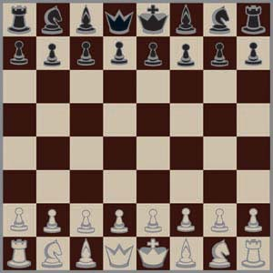
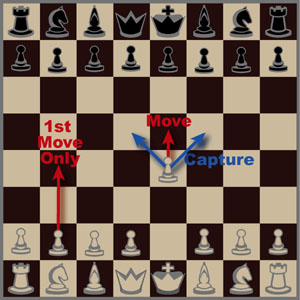
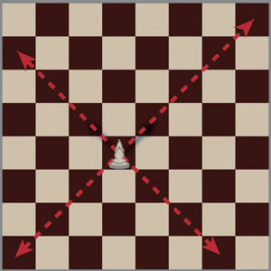
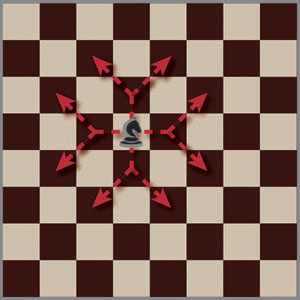
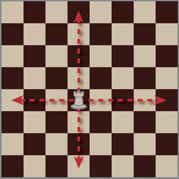
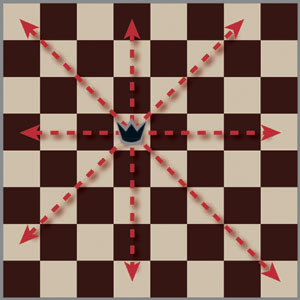
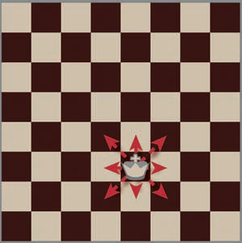

Chess Instructions for Beginners
Introduction
The game of chess is over 1300 years old and is one of the most popular games in the world. It has received more total thought time than many great works of art and literature. Like a great work of art, chess is a paradox on many levels. It's easy to learn but can take a lifetime to master. There are few games which can match its usefulness as a tool for developing mental abilities, yet it's downright fun. Intuitor.com has provided these online instructions to assist beginners and help promote the outstanding game of chess.
Chess is a two-person board game which simulates a battle between two opposing armies. The board has sixty-four squares of alternating colors. Each player has a set of sixteen pieces as shown below. One player will have a set of dark or black pieces and the other a light or white set. These symbolize opposing armies.
- 8 Pawns
- 2 Bishops
- 2 Knights
- 2 Rooks, or Castles
- 1 Queen
- 1 King
Moving and capturing: White moves first followed by black. The players continue taking turns using only their own pieces until the game ends. A turn consists of a single act of either moving or capturing. When a piece is moved, it is relocated in the center of a different square. A player can only capture an opponent's piece, not their own. When a chess piece is captured, it is removed from the board and replaced by the attacking piece. Unlike checkers, multiple captures are not allowed during the same move. Captures are also optional. The exception is when the king is in jeopardy and the only way to save him is to capture a threatening piece.
The playing board is the battlefield of the game. It's traditionally oriented so that each player has a white square on the corner to his or her right. The pieces are arranged on the board as shown. Note that the queen always is placed on a square of her own color.

figure 1. Chess Board Setup
Pawn: The pawn is considered the weakest piece on the board. It moves laterally one square at a time, as shown in figure 2, with one exception. Each pawn can be advanced by two squares the first time it's moved. Pawns can only move in the forward direction. When they reach the last row, and can be moved no further, they can be promoted to any type of piece on the board except for a king. Generally they are promoted to a queen since this is the most powerful piece on the board. Hence, a player can have more than one queen.

figure 2. Pawn's Movement and Capture Pawns capture other pieces diagonally in the forward direction. They are the only pieces which do not capture in the same direction in which they move.
Bishop: The bishop has the strength of about three pawns and moves diagonally (see figure 3). Unlike a pawn it can move backwards or forwards. It can also move more than one square at a time as long as it moves in a straight line. In other words, a bishop can move across the entire board. A bishop cannot jump over pieces and can also never move to a different-colored square. Bishops capture by moving in their normal manner to the square occupied by an opponent's piece and replacing it.
 figure 3. Bishop's Movement
Knight: Like the bishop, knights have about the same strength as three pawns. Knights are moved in a rather unique manner, one square diagonally and one square laterally (see figure 3). They can move forwards or backwards and are the only pieces which can jump over other pieces (see figure 4). Knights capture by moving in their normal manner to a square occupied by an opponent's piece and replacing it.
 figure 4. Knight's Movement
Rook: The rook, or castle, has the strength of about five pawns. Rooks are moved forwards or sideways in a lateral manner as shown in figure 5. They can move backwards and forwards one or more squares at a time. In a given move a castle can only move in one direction along a straight line. To capture a piece, castles are moved in their normal manner to the occupied square where they replace the captured piece.
 figure 5. Rook's Movement
Queen: The queen is the most powerful piece on the board and is the equivalent of about nine pawns. A queen can move diagonally like a bishop or laterally like a castle (see figure 6). Like the bishop and the castle, a queen cannot turn corners in a single move. It captures in the same manner as either a castle or a bishop.
 figure 6. Queen's Movement
King: A king is only slightly more powerful than a pawn but is nevertheless the most important piece on the board. While the king can move backwards or forwards, either laterally or diagonally just like a queen, it can only do so one square at a time (see figure 7). A king cannot move to a square where it would be in danger of being captured. A king can capture a piece on any square where it can legally move.
 figure 7. King's Movement
Castling: While the rook is the second most powerful piece on the board, it starts the game in a poor position to use its power. Also the king, the most important piece on the board, is located in a position which becomes increasingly vulnerable as the game develops. To overcome these problems castling was invented. It is the only time more than one piece can be moved at a time. In castling the king is moved two squares toward one of his rooks and then the rook is placed on the opposite side of the king. For example, if the king moves two squares to the right, the rook is placed one square to the left of the king. This usually places the king in a safer position behind a wall of pawns. It also places the rook in a more powerful position near the center of the board. A king can castle to either side but can only castle once and cannot jump over pieces in the way.
Castling can only occur under the following conditions:
- It hasn't been previously done
- There are no pieces in the way
- Neither the rook nor the king have been moved
- None of the squares the king must pass through are guarded by the opponent's pieces. In other words, if moving the king one square instead of two squares would place the king in check then castling is prohibited.
- The king is not in check.
Castling is a very powerful move and so it's generally a good idea to castle fairly early in the game. Otherwise an opponent can force the king to move, making castling impossible. Castling early also makes the power of the rooks more useful.
En passant: This is a form of capturing done by a pawn to a pawn and is possibly the least understood rule in chess. Many people play for their entire lives and never use it. Needless to say, if you're a beginner it's best to learn this rule after you have played a few games.
En passant was created so that pawns cannot evade capture by an opponent's pawns by moving two squares on their first move. If this happens, then the opponent's pawn can capture the pawn moving two squares just as though it had moved only one. An opponent can choose not to exercise the right to capture a piece by en passant. However, the right must be used immediately following the opportunity or it is lost.
Check: Threatening a king with capture is treated differently from an ordinary piece. The king is not only royal but the objective of the entire game. A player declares "check" when he moves in a manner which threatens an opponent's king with capture. However, the term is only used if the king has a means of escape. The opponent must get the king out of check immediately. This can be done in one of three ways: 1) Move the king. 2) Capture the attacking piece. 3) Move a piece so that it blocks the attack. A king cannot castle if it is in check.
Checkmate: The game is won when an opponent's king is inescapably placed in a position where it would be captured on the next turn. Actually capturing the king and removing it from the board like a common piece would have been unthinkable when chess was invented, and so this is not done. Instead the winner says the word checkmate and the game ends.
Sometimes a king is placed in check several times and never checkmated. Other times a king is placed directly in checkmate. There is no rule saying a king must be placed in check before it is placed in checkmate and there is no limit on the number of times a king can be placed in check.
If a player foolishly exposes his king to check, he is allowed to take the move back. Obviously there is no glory in winning by breaking rules and the rules say one cannot move in a way which exposes one's king to check. Likewise, if there is a means of escape and a player foolishly doesn't take it, the move must be replayed. On the other hand, if a player assumes the game is hopelessly lost and resigns, he or she automatically loses even if later analysis indicates that the situation was not hopeless. Resigning a game is risky but is the sign of an experienced player. Resigning is a way to save face by not pointlessly prolonging the game.
A game can end in a draw in four different ways:
- Stalemate: This means there is no legal move an opponent can make when it is his or her turn to move. This often occurs when a king is trapped in a position where its only move would be to move into check
- The fifty-move rule: If a piece has not been captured or a pawn moved in fifty moves then a player can declare a draw on his or her turn.
- Both sides agree to a draw.
- Neither side has enough pieces left to setup a checkmate.
The stalemate is the most disconcerting of the ways to draw because it can snatch victory from an opponent with clearly superior numbers who by all rights should win.
Chess Strategy: Basic strategy for the intermediate chess player
Forchess: Forchess is a popular chess variant for four-handed play. First become proficient in chess. However, later when you want to try a four-handed variant, try Forchess.
Chess World: This is one of the larger and more complete chess-related sites on the Web.
|
|
||||||||
© 1996-2001 by T. K. Rogers, all rights reserved. No part of this webpage can be reproduced in any form, electronic or otherwise, without the express written approval of T. K. Rogers. Forchess is a registered trademark.